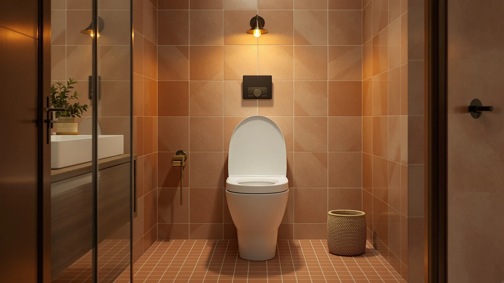

How to Clean Toilet Seat Naturally (2026)
Prices and picks verified as of August 2026. Independent, reader-supported reviews.


Things to Know Before You Buy
- White vinegar and baking soda are the core of any method to clean a toilet seat naturally, handling most grime and mineral buildup without bleach or ammonia fumes.
- Undiluted vinegar disinfects reasonably well for routine use but is not a hospital-grade disinfectant.
- Hinges collect the most residue, so a stiff-bristle brush and a baking soda paste matter more than the spray itself.
- Seats with smooth, low-texture surfaces or quick-release hinges are noticeably faster to keep clean naturally.
- Total cleaning time runs about 30 minutes, most of it the vinegar sitting to loosen buildup.
If you want to know how to clean toilet seat naturally, the short answer is white vinegar, baking soda, and a little patience instead of a cabinet full of chemical sprays. Both ingredients cut through the buildup that collects on hinges and rims, and neither leaves behind the sharp fumes that bleach-based cleaners do in a small bathroom.
This guide walks through the process in five steps you can finish in about half an hour, from mixing the vinegar solution to the final disinfecting wipe-down. We also cover the mistakes that make natural cleaning less effective, and which toilet seats are built in ways that make this routine faster week to week.
What You'll Need
Everything here comes from the kitchen or the cleaning cabinet you already have, which is the main appeal of learning to clean a toilet seat naturally instead of buying a specialty product.
- Supplies: white vinegar, baking soda, microfiber cloths
- Tools: spray bottle, soft-bristle scrub brush
Step 1: Clear the seat and mix your vinegar solution
Lift the seat and lid, and move anything sitting nearby, like a plunger or trash can, out of the way so you have room to work. Fill a spray bottle with equal parts white vinegar and warm water. A one-to-one ratio is strong enough to loosen soap scum and mineral deposits without being so acidic that it damages plastic or painted hardware.
If the seat has visible rust spots on the bolts or hinges, skip the water and use straight vinegar in those areas only. You want the full-strength acid concentrated where the buildup is worst, not spread evenly across surfaces that are already fairly clean. Getting this ratio right now makes the rest of the cleaning go faster, since a solution that's too weak just means more scrubbing later.
Step 2: Spray down the seat and let it sit
Spray the top, underside, and rim of the seat generously with your vinegar solution, paying extra attention to the area under the seat where it meets the bowl. Let it sit for five to ten minutes. This dwell time is what actually does the work, since vinegar needs several minutes of contact to dissolve mineral deposits, not just a quick spray-and-wipe.
While it sits, avoid flushing or running water nearby that could splash the solution off before it has finished working. If the seat has heavy staining, you can extend the wait to fifteen minutes without any risk to the material.
Step 3: Scrub the hinges with a baking soda paste
Mix two tablespoons of baking soda with enough water to form a thick paste, about the consistency of toothpaste. Apply it to the hinges, the underside ridges, and any textured or stained spots with a soft-bristle brush, working in small circles rather than long strokes.
Hinges are where most seats accumulate the buildup that a simple wipe-down misses, since the tight gaps trap moisture and residue. The mild abrasion from baking soda lifts that grime without scratching plastic or enamel the way a stiff scouring pad would, which makes this the step that matters most.
Step 4: Rinse and dry every surface
Wipe the entire seat down with a clean, damp microfiber cloth to remove the loosened vinegar and baking soda residue. Rinse the cloth and repeat until the surface no longer feels gritty, especially around the hinges where the paste tends to collect.
Dry the seat completely with a second, dry cloth. Leaving moisture behind, particularly in hinge gaps, invites the same buildup you just removed to start forming again within days, which defeats the point of doing this in the first place.
Step 5: Finish with a natural disinfecting pass
Once the seat is dry, give it a light final wipe with a cloth dampened in straight white vinegar. This last pass handles the disinfecting side of things, since undiluted vinegar is acidic enough to kill many common household bacteria on contact.
Let the seat air dry for a few minutes before putting the lid down. The faint vinegar smell fades within an hour and leaves no chemical residue behind, which is the main advantage of skipping bleach-based sprays in a small, enclosed bathroom.
Common Mistakes to Avoid
The biggest mistake people make when learning how to clean a toilet seat naturally is skipping the dwell time. Spraying vinegar and wiping it off immediately barely touches mineral deposits, since the acid needs several minutes of contact to break them down. Rushing this step is why some people conclude natural cleaners "don't work" as well as bleach.
Mixing vinegar with anything other than water is another common misstep. Combining vinegar with hydrogen peroxide creates peracetic acid, which can irritate skin and lungs in a small bathroom, and combining it with any bleach-based product releases chlorine gas. Keep the two cleaning systems on separate days if you use both.
Overloading the baking soda paste is a smaller but frequent error. A paste that's too thick or too dry crumbles instead of working into the hinge gaps, so you end up scrubbing longer than necessary. Aim for a spreadable consistency, and add water a few drops at a time until it holds together without being runny.
Finally, don't skip drying the seat before you put the lid down. Trapped moisture around hinges is what lets mildew and new mineral buildup start forming again within a day or two, undoing most of the work from the steps above. A dry seat holds its clean state noticeably longer than one left damp.
Our Top Picks
The vinegar-and-baking-soda routine above works on any toilet seat, but some designs make it faster to keep up with. These three picks stand out for smooth, low-texture surfaces or hinges that come apart easily for a deeper natural clean.

Editor’s Pick
Round Marble Toilet Seat Natural
Its marble-effect coating is dense and non-porous, so vinegar wipes it clean without soaking into the surface the way it can with textured plastic.
$42.99
Check Price on Amazon
Best Value
Bemis 7300SLEC Slow Close Toilet
STA-TITE hardware keeps the hinges from loosening over time, which means fewer gaps for grime to settle into between cleanings.
$29.99
Check Price on Amazon
Premium Choice
1M Family Toilet Seat Patented
The quick-release hinges lift the seat completely off the bowl without tools, so you can scrub the underside and hinge area directly instead of reaching around them.
$39.99
Check Price on AmazonFrequently Asked Questions
Can I clean a toilet seat with only vinegar and baking soda?
Yes. Vinegar breaks down mineral deposits and mild grime, and baking soda adds gentle abrasion for hinges and textured surfaces. Together they handle most everyday buildup without bleach or ammonia-based cleaners.
Is vinegar strong enough to disinfect a toilet seat?
Undiluted white vinegar kills many common household bacteria and is a reasonable natural option for routine cleaning, though it is not registered as a hospital-grade disinfectant. For a shared or heavily used bathroom, alternate a vinegar routine with an occasional stronger clean.
How often should I clean a toilet seat naturally?
A quick vinegar wipe-down two to three times a week keeps most seats free of buildup, with a deeper baking soda scrub of the hinges once every one to two weeks depending on household size.
Can I use lemon juice instead of vinegar?
Lemon juice works as a substitute in a pinch since its citric acid also cuts through mineral deposits, though it is milder than vinegar and works best on light, everyday grime rather than heavy buildup.
Will vinegar damage a painted or wood-look toilet seat?
Diluted vinegar is safe for most painted and laminate finishes when you dry the surface promptly afterward. Leaving it to sit undiluted for extended periods on painted wood can dull the finish, so stick to the diluted spray for those seats and reserve full-strength vinegar for hinges and hardware.
Verdict
Cleaning a toilet seat naturally comes down to two ingredients most people already have in the kitchen: white vinegar for cutting mineral deposits and disinfecting, and baking soda for scrubbing the hinges and stained spots that a spray alone won't reach. Follow the five steps above and you'll cut through most buildup in about thirty minutes, without the fumes or residue that come with bleach-based cleaners.
The routine works on any seat, but the process goes faster on one built for easy access. Among the picks here, the Round marble-finish seat stands out for how little effort its coating takes to keep clean, since its smooth, non-porous surface never lets vinegar or grime soak in the way a textured plastic seat can. If your current seat fights you every time, that kind of surface is worth factoring into your next upgrade.